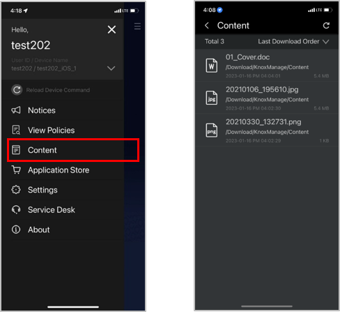

Knox Manage 23.03 release notes
Last updated July 26th, 2023
Update to supported Android versions
In accordance with our updated Android support plan, the minimum supported version for Android devices registered in Knox Mobile Enrollment, Knox Manage, Knox E-FOTA, Knox Configure, and Knox Deployment app have each rolled forward. To review the minimum version on a product-by-product basis, see Policy update on Knox supported versions.
Simplified registration for and access to Knox cloud services
The registration and access flows for Knox cloud services are streamlined. The My Knox dashboard is retired, and you can now sign in to the Knox Admin Portal directly and manage your Knox services, including Knox Manage. After you sign in to the Knox Admin Portal, you can operate Knox Manage right away. If you’d like to display or register for additional Knox services, click your account icon > Settings > Show/hide services.
Android Legacy deprecation
With 23.03, Knox Manage no longer officially supports the Android Legacy platform. The Knox Manage team strongly recommends that you migrate to the latest Android Enterprise platform.
For detailed information about migrating your device fleet, see the Android Legacy to Android Enterprise migration guide.
New Knox Manage license type
The Knox Manage license is now split into two types — legacy licenses with the KLM09 prefix, and newer licenses with the KLM12 prefix.
Benefits of the KLM12 license include:
- Frictionless access to all Knox Platform for Enterprise features, including Premium features, without the need for additional Knox Manage with Knox Platform for Enterprise licenses.
- The ability to seamlessly downgrade from a Knox Suite license to a Knox Manage license, without the need to re-enroll devices and reassign them the new license.
The legacy Knox Manage license will be deprecated in a later release. If you are an existing customer, the Knox Manage team recommends that you switch from the legacy license to the new license to enjoy its benefits. Contact your local reseller to obtain the newer license. The legacy license will only remain available to customers who have already purchased it.
For more information, see Licenses Overview and Change a license.
Updates to trial license
You can now re-assign trial Knox Manage and Knox Suite licenses to your tenant when your trial license expires. Previously, a trial license could only be assigned to your tenant once.
Support for fully managed mode with AMAPI
Previously, the Android Management API (AMAPI) platform with Knox Manage only supported Android devices in work profile mode.
With 23.03, Knox Manage now supports fully managed mode for the AMAPI platform. You can enroll devices in this mode through user-based enrollment (requires a user account) or userless enrollment (requires an enrollment token issued by the IT admin). User-based enrollment supports activation through a QR code, while userless enrollment supports activation through tokens. Both also support other enrollment technologies, those being Knox Mobile Enrollment and Zero-touch
To get started enrolling fully managed devices, see Android Management API device enrollment quickstart.
Support for kiosks with AMAPI
Knox Manage now supports kiosks on the AMAPI platform. Like with the Android Enterprise platform, both Single-app Kiosk and Multi-app Kiosk modes are available.
AMAPI kiosks differ in that apps can only be managed through MGP, and they have limited options for customizing the interface. Only a handful of UI elements, such as the status and navigation bars, can be disabled. The Kiosk Wizard isn’t available for this platform, therefore Home screen elements, such as app shortcuts, folders, widgets, the favorite apps, and the wallpaper, can’t be adjusted.
For step-by-step information about creating kiosks for AMAPI profiles, see Set up an Android Management API kiosk.
Delegated scope additions for Android and AMAPI
New delegation scopes are available for Android Enterprise and AMAPI. The new scopes apply to both fully managed and work profile modes, and are supported across various versions of Android higher than 9. For complete technical details about these delegated scopes, see Android Enterprise policies and Android Management API policies.
| Platform | Delegation Scope |
|---|---|
| Android Enterprise |
Management of uninstalled packages Installing existing package Selection of key chain certificates Network logging Security logging |
| AMAPI |
Management of uninstalled packages Installing existing package Selection of key chain certificates |
Enhancements to location policy for Android
The Location Setting policy is in the process of being deprecated, and the GPS policy is receiving additional values that are commensurate with the Location Setting policy’s prior behavior. As of 23.03, Location Settings is disabled, and will be removed in a future release.
For this release, the GPS policy takes precedence over any value of the Location Settings policy. When you save your policy changes to a profile, if the Location Settings policy is set to Disallow and the GPS policy is unset, a pop-up will guide you into giving the GPS policy a value.
Update link to Google Enterprise account
Previously, the Knox Manage console provided you the option of delinking the EMM connection between your Knox Manage tenant and your Google Enterprise account on the Setting > Android > Android Enterprise page through an action named Delete EMM.
As of 23.03, that action is renamed to Replace EMM. If for whatever reason you need to link your tenant to a different Google Enterprise account — such as the case of the account becoming unrecoverable — you can seamlessly transition all your devices and MGP app assignments to the new linked account.
For more information, see Configure the Android Enterprise environment and Update EMM provider information.
Lock expiry notification for Android
You can now alert the user when their device lock will expire soon. Two new When to send notification before expiration policies — one for fully managed mode, the other for work profile mode — let you push a notification 1, 3, 5, or 7 days before the lock’s expiry date. The notification persists until the device user changes the lock.
Improvements to custom wallpaper policies for Android
Previously, the Custom Wallpaper policy set the same wallpaper for both the Home and lock screens, and could only function if the Wallpaper Change policy was set to Allow.
With Knox Manage 23.03, the Custom Wallpaper policy no longer depends on the latter policy, and now allows you to set a separate wallpaper for each screen. In order to apply separate wallpapers, the device must run Knox Manage agent 23.03 or higher.
Easy identification of app updates
The 23.03 release brings a quality of life change to the Application page. When an app has an available update, it’s tagged with Need Update in the Version column, making it much easier to identify multiple out-of-date apps at once and facilitating updating them in bulk from one view.
This UI enhancement applies to apps sourced from Google Play, Managed Google Play, and Apple App Store.
Content management for iOS and iPadOS
Knox Manage 23.03 introduces much-requested support for mobile content management on the two Apple platforms. You can now add, push, and sync files to managed iPhones and iPads. The device user can view and manually sync the content in the new Content screen of the Knox Manage agent. If the agent doesn’t support a file’s type, the device user can open it in an external app.

For more information about the available content management features, see Add content.
Home Screen customization for iOS and iPadOS
With the new Home Screen Layout policy, you can now create one or more custom layouts for the Home Screen of iPhones and iPads. You can specify the app shortcuts, web clips, and folders in the Page area, and the four favorite apps in the Dock area.
Update the eSIM Cellular Plan device command for iOS and iPadOS
A new command, Update the eSIM Cellular Plan, queries the URL for active eSIM profiles on iPhones and iPads. The command is supported on iOS 14 and higher, iPadOS 13 and higher, and Shared iPads.
For more information, see Update the eSIM Cellular Plan in the Apple Developer documentation.
Managed configurations for iOS and iPadOS apps
With Knox Manage 23.03, when assigning internal iOS and iPadOS apps, you can now define a managed configuration, provided the app supports them.
For the details of defining a managed configuration, see Assign internal Android and iOS apps. The List of lookup items covers all the values you can pass to an app.
Improvement to notifications for iOS, iPadOS, Windows agents
Previously, when you pushed a notification through the Knox Manage agent on certain platforms, only the title of the notification would display on the lock screen (iOS, iPadOS) or the action center (Windows). To view the message body of the notification, the device user had to unlock the device (iOS, iPadOS) or select the notification (Windows).
As of 23.03, this issue is resolved on all three platforms, and the notification displays its complete text in all circumstances.
Improvement to forced unenrollment for Windows
Previously, if you force-unenrolled a Windows device while it was connected to a network, the device would unenroll at the agent level, but not on the Knox Manage server.
This release fixes that issue.
Chrome OS policy additions
Knox Manage 23.03 adds support for 46 new Chrome OS policies. The salient policies are:
| Policy group | New policy |
|---|---|
| Users & Browsers | |
| Device | |
| Managed guest sessions | Clipboard |
Portuguese localization for Chrome OS policies
When viewing Chrome OS policies on the Knox Manage console, the policy names are now available in Portuguese.
License conversion information
When changing licenses, the options in the Select Change License Type dialog are more descriptive and comprehensive, and properly explain which conversions are upgrades, replacements, or downgrades. Admins now see the conversions that they have permission to perform. The dialog also accounts for the new KLM12 license. The aim of these changes is to help you make a more informed decision when modifying your licenses.
Unenroll devices from Knox Mobile Enrollment
Previously, when you unenrolled a device originally registered through Knox Mobile Enrollment, it would be removed from your Knox Manage tenant, but not your Knox Mobile Enrollment tenant.
With 23.03, when you begin unenrolling a device added by Knox Mobile Enrollment, you now have the option to remove it from that service as well as Knox Manage. This functionality is only available if you sign in to your admin account with a Samsung Account or a supported third-party SSO identity provider.
Restrict sub-admin access to secure codes
You can now control a sub-admin’s ability to view to your tenant’s secure codes — Unlock Code, Unenrollment Code, and Exit Kiosk Code — when they inspect a device on the Device Details page. To restrict access, when creating their account, select Security Code in the Device.
Status bar color picker in Kiosk Wizard
In the Kiosk Wizard, you can now customize the color of the Status bar and text. You can select a hexadecimal background color with a color picker, and set the text color to either black or white.
For more information, see Kiosk Wizard menu items.
Smart View setting in Kiosk Wizard
When configuring a kiosk’s Device Settings in the Kiosk Wizard, you can now toggle Samsung Smart View.
For more information, see Configure kiosk device settings.
Dual-SIM ICCIDs on Device Details page
The ICCID field in the details of a device now accurately reflects the current state of both SIM slots on a dual-SIM device by displaying both detected SIM ICCIDs.
Improvement to client error KMA_F4021
To ease troubleshooting, the error for a device activation failure, KMA_F4021, now provides the last four digits of the license number at the end of its message in the Knox Manage agent. The message now reads:
Note
[ERROR] [KMA_F4021]
License Activation Failed
The license activation operation has failed due to the expired license. Please contact your administrator. [701:ERROR_LICENSE_EXPIRED:XVYX]
Managed app information in device CSV reports
When exporting device information to a CSV file on the Device page, you now have the option to export additional information about the managed apps for those devices — which apps are assigned, which are installed, and which are assigned but not installed.
For more information, see View the device list.
Location history reports as XLSX files
Previously, you could only export device location history as a GPX file.
You now have the additional option of exporting the report as an XLSX. The spreadsheet includes Date, Latitude, Longitude, and Altitude columns.
For more information, see Check the locations of devices.
Improvement to KSP license key field
Previously, the Knox Service Plugin policy group on the Set Policy page would display an empty Knox Service Plugin (KSP) license key field if you hadn’t yet activated the plugin and entered a license key.
As of 23.03, if KSP isn’t activated and no license key is provided, the license key field is hidden.
Update to name format of ADE devices
Previously, devices enrolled through Automated Device Enrollment (ADE) were named using a format that included the term AppleDEP, which reflected the program’s original name.
Both device name formats now use the correct program name:
AppleADE_iOS_#SequenceNumber
UserID_AppleADE_iOS_#SequenceNumber
When you enroll a device after the 23.03 release, Knox Manage names it with the updated format. Devices enrolled prior to 23.03 retain their original names.
For information on how to select a name format, see Automated Device Enrollment quickstart.
Improvement to software downloads in console
When downloading the SCC client or the Knox Remote Support app from the Download dialog on the Knox Manage console, the client version now displays next to the software’s name.
Updates to lookup fields and device information
On the Knox Manage console, the Ownership and Ownership Code fields are no longer available as report queries in the Device Basic Information category, and as of 23.03 these fields are removed from any reports and dashboards that contain them. For more information, see Default reports and report queries.
Additionally, two new look items have been added — Device Tags and Device Alias.
Console terminology updates
The following terms have been updated on the Knox Manage console.
| Page or element | Previous term | New term |
|---|---|---|
| Application menu | Managed Google Play Private Web | Managed Google Play Web |
| Knox Remote Support dialog | Allowed by Use | Ask users to start |
| Force Run | Automatically start (Force run) | |
| Kiosk app settings | Single App | Single App Mode |
| Multi App | Multi App Mode | |
| Kiosk Browse | Web Mode |
API changes
Knox Manage API 23.03 has the following changes:
| Operation | Change |
|---|---|
| sendDeviceControlForRebootDevice (Reboot a device) | New operation that remotely reboots a device. |
Notice regarding upcoming changes to Network Time Protocol Settings policy
Currently, the Network Time Protocol Settings policy has three values - N/A, Allow, Disallow. The behavior of N/A and Disallow is the same.
With Knox Manage 23.06, the Disallow option will be removed. If by that time you have any profiles that set the policy to Disallow, its value will automatically switch to N/A.
Notice regarding changes to Samsung Knox (AE) Bluetooth policies
With Knox Manage 23.03, the Bluetooth UUID Allowlist Setting and Bluetooth UUID Blocklist Setting policies are supported only for Android 13 and lower.
Notice regarding Samsung Cloud Connector Client support
Samsung Cloud Connector (SCC) client v2.5.2_20221007 was released with Knox Manage 22.11.
To minimize undefined behavior and downtime, you must update your SCC Client to the latest version by May, 2023.
Notice regarding upcoming directory integration deprecation
Support for directory integration will begin sunsetting with Knox Manage 23.06, and cease in 2024. Sync services are a suitable replacement for all directory functionality. For information about switching to a sync service, see View the directory connector status. For more general information, consult how to Manage sync services.
Back to release notesIs this page helpful?